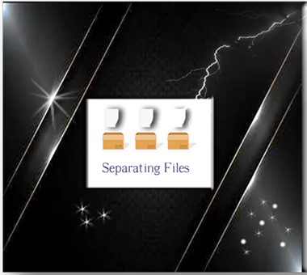
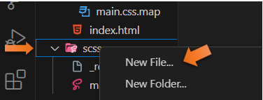

~6 Separating Files~
5/20/2024
Watch it, make sure your Watch SASS is turned on, remember if it is not showing at the bottom of the screen, when you go to the Scss file, you will need to go to setting and then SASS in search bar to make it show up. Turn it on from there, by hitting it.

What is a partial SASS file
If you are separating out your files, you can create little snippets, put them in an external file, and then incorporate them into other SASS files.
This can be particularly helpful, if you are working on a large project, and wish to break it down into smaller pieces.
We use partial sass files to do this. All we need to do to create one of these partial files is to name the sass file with a leading underscore. So, this underscore is what is letting SASS know that this file is only a partial file, and it needs to know this because it wants to generate all SASS files into regular CSS, a partial SASS file should not be compiled into regular CSS. This means that the compiler will ignore all the files that start with an underscore,
Watch it, so DO NOT use an underscore in your naming convention if you are creating a regular SCSS file.
Creating a partial SCSS file
First you need to make sure that you are inside of your SCSS folder, the one that is containing your regular SCSS file.
Create a new file, by right clicking on that SCSS folder and choosing new file.

The Reset Partial File
You can name this partial file, anything you want, as long as the name starts with an underscore. Also, we want something that will be useful, so we will be creating a reset file.
Just write down the regular reset stuff, and save the file.
Watch it, remember to put the extension of .scss on it, or it will not work
* {
box-sizing: border-box;
margin:0;
padding:0;
}
Go back to the Main.SCSS file
We want to import this resets at the top of the main.scss file
Notice that we do not need the underscore or the extension of .scss when we import it.
@import'./resets';
SAVE Everything
Now look at your regular CSS file, and you will see that it has compiled the code into our CSS file. You will see that it compiled at the top of the regular CSS file
Now let’s try another one
The Variable Partial File
Remember to right click on the SCSS folder itself and choose new file from the pop-up menu.
Cut all of the variable that you have created in the main.scss file and put them into the partial that we just created.
$primary-color: #09191F;
$secondary-color: #153B47;
$accent-color: #3D606E;
$text-color: #fff;
Watch it, remember with that code now in an external file, you will need to write your import statement to bring it in at the top of the SCSS file.
To Duplicate Code
If you want to duplicate a line of code. Hover over the line you want to duplicate, and then hit alt-shift-down- arrow.
SAVE Everything
Go back to the index.html file to check and see if everything is working. Since our reset removed all the padding you will see the paragraph now buts up against the ceiling of the page.
And the hover still works too.
You will find that being able to separate out everything into smaller modules, enable different team members the ability to take just one part of the project, and work on it individually.